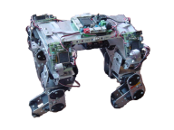
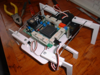

Servos Futaba 3003

Contenido
[ocultar]Introducción
Los servos se emplean mucho en aplicaciones de robótica. En este cuaderno nos centraremos en uno de los más comunes y usados: los Futaba 3003.
Tienen dos tipos de aplicaciones. Por un lado se pueden "trucar" y convertir en motores de corriente contínua , para construir robots móviles, como por ejemplo el robot de iniciación a la robótica Skybot. Por otro lado se emplean como articulaciones para construir robots articulados, como el perro Puchobot, el gusano Cube Revolutions o el hexápodo Sheila.
|  |
 | |
| |
|
|


Características
| Velocidad: | 0.23 seg/60 grados (260 grados/seg) |
| Par de salida: | 3.2 Kg-cm (0.314 N.m) |
| Dimensiones: | 40.4 x 19.8 x 36 mm |
| Peso: | 37.2 gr |
| Frec. PWM | 50Hz (20ms) |
| Rango giro: | 180 grados |
Control

Los servos se controlan aplicando una señal PWM por su cable de control. Las señales PWM (Pulse Width Modulation, Modulación por anchura de pulso) son digitales (pueden valer 0 ó 1) y permiten que usando un único pin de un microcontrolador podamos posicionar el servo. Esto es una gran ventaja, porque si por ejemplo, disponemos de un micro con 8 pines de salida, podremos posicionar 8 servos.
Para posicionar el servo hay que aplicar una señal periódica, de 50Hz (20ms de periodo). La anchura del pulso determina la posición del servo. Si la anchura es de 2.3ms, el servo se sitúa en un extremo y si la anchura es de 0.3ms se sitúa en el opuesto. Cualquier otra anchura entre 0.3 y 2.3 sitúa el servo en una posición comprendida entre un extremo y otro. Por ejemplo, si queremos que se sitúe exactamente en el centro, aplicamos una anchura de 1.3ms.
Cuando se deja de enviar la señal, el servo entra en un estado de reposo, en el que no aplica ninguna fuerza y por tanto se podrá mover con la mano. Mientras se le aplique la señal, permanecerá fijado en su posición, haciendo fuerza para permanecer en ella.
Ejemplos para la tarjeta Skypic

Ejemplos de cómo posicionar servos Futaba 3003 usando un PIC16F876A. Se utiliza la tarjeta Skypic y el compilador de C SDCC
Ejemplo 1: Movimiento alternativo de dos servos
Ejemplo de control de servos mediante interrupciones. Se utiliza el timer 0. En el ejemplo, sólo se posiciona los servos 1 y 2, pero se pueden controlar hasta 8.
- Ficheros:
| servo8-int.c | servo8-int.hex | Control de hasta 8 servos. Movimiento alternativo de los servo 1 y 2 |
- Compilación:
sdcc -mpic14 -p16f876a -Wl-m -Wl-ainhx8m servo8-int.c
Ejemplo 2: Movimiento de hasta 8 servos a traves del puerto serie
Programa interactivo que permite mover hasta 8 servos utilizando un terminal de comunicaciones en el PC (por ejemplo gtkterm en Linux o Hyperterminal en Windows)
- Ficheros:
| servos-sci.c | servos-sci.hex | El usuario puede establecer la posición de los 8 servos mediante comandos ASCII por el puerto serie |
| sci.h | --- | Funciones usadas para las comunicaciones serie |
- Compilación:
sdcc -mpic14 -p16f876a -Wl-m -Wl-ainhx8m servos-sci.c
Abrir el terminal de comunicaciones y ejecutar el programa. Aparecerá el siguiente menú:
Teclas: 1-8 -> Seleccionar servo activo q : servo a posicion 90 a : Servo a posicion -90 p : Incrementar en 5 grados q : Decrementar en 5 grados (spacio): Servo a posicioon 0 Opcion?
Con las teclas del 1 al 8 se selecciona el servo que se quiere mover y con el resto de opciones se controla su posición. Es un ejemplo muy útil para hacer pruebas.
Conexionado

El servo dispone de un conector al que llegan tres cables. El rojo es el de alimentación (4.5-6 voltios). El negro es masa. Y el blanco es el de la señal de control
Planos
- Planos del servo futaba 3003 (cotas en mm)


- Modelo 3D hecho en Blender


- Modelo 3D hecho con OpenScad

Descargas
| planos-futaba.dxf | Planos del servo Futaba 3003, en DXF |
| plano-futaba.pdf | Planos del servo Futaba 3003, en PDF |
| futaba.blend | Modelo 3D del futaba, para Blender |
| futabas-2.blend | Escenario virtual con 2 futabas, uno con corona y otro sin ella. Para Blender |
| futaba-3003-openscad.zip | Modelo para OpenScad |
| Futaba3003.fcstd | Modelo para Freecad |
| Futaba3003.stp | Futaba 3003 en formato STEP |
Repositorio
Todos los planos y modelos 3D están disponibles en el repositorio de los módulos Y1:
- Repositorio svn: http://svn.iearobotics.com/modulos_y1/v1.1/
Enlaces
- Control de servos Futaba 3003 con un PIC16F876A: Transparencias y programas de ejemplo
- Índice de cuadernos técnicos
- Robot Skybot, que usa los servos Futaba 3003 trucados para las ruedas
- Tutorial: Trucaje de los servos Futaba 3003
- Módulos Y1: Módulos basados en los servos Futaba 3003 para la construcción de robots modulares
- Puchobot: Un perro robot que utiliza 12 servos
- Cube Revolutions: Un robot modular de tipo gusano de 8 servos
- Sheila: Robot hexápodo que usa 3 servos
- Labobot: control de servos usando una FPGA
Autores
Licencia
| |
| |
Noticias
- 27/Jul/2014: Añadido modelo 3D para Freecad
- 13/Ago/2010: Creado modelo del futaba en OpenScad (metido en el repositorio)
- 30/Nov/2009: Migración finalizada. Añadidos ejemplos para la Skypic
- 20/Sep/2009: Comenzada la migración al wiki desde esta página